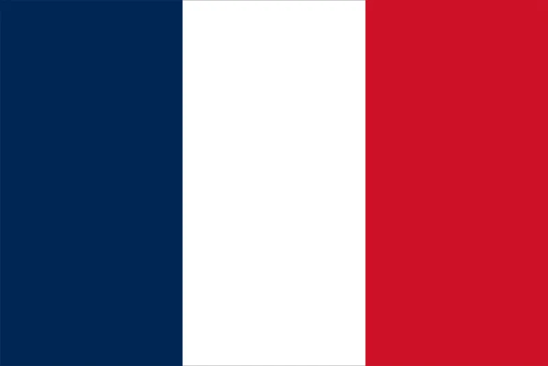
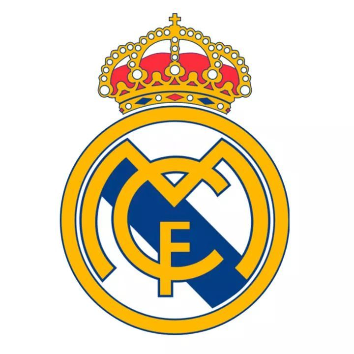

MBAPPÉ FAN SITE
Les différent événement récent à propos de Kyllian Mbappé
Les différent événement récent à propos de Kyllian Mbappé
Clasico du 25 octobre :
le Real Madrid a battu le Barça 2-1 grâce à un doublé de Mbappé et revient à trois points de son rival. Ce doublé lui a offert ses 99e et 100e buts avec le Real Madrid.
Joueur du mois :
il a été élu joueur du mois d'octobre 2026 en Liga.
Ballon d'Or 2026 (26 octobre) :
Harry Kane l'a remporté devant Mbappé. C'est le meilleur classement de Mbappé à ce jour.
Bilan de la saison :
il compte 17 buts toutes compétitions confondues cette saison, dont 13 en Liga et 4 en Ligue des champions. Ces chiffres datent d'avant mes dernières sources, donc ils ont pu évoluer

